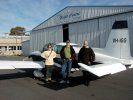
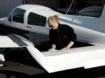
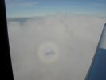
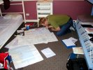

|
As Thomas put it very well: "Before we even had left Perth, we were one day delayed already". To pack and move all our belongings after one year in Perth lasted a little longer than we had expected. How on earth can you gather that many things in only one year!?!
Without Richard, Dookie, Jeanett and Thomas' help we probably still would be packing :-). Jeanett and Thomas were kind to let us stay another night at their place and Roman borrowed us his car (we had sold our car the evening before).
 On the morning of June 2nd Jeanett and Thomas drove us to Jandakot airport where Grummy was impatiently waiting ("Grummy" is what we've nicknamed "our" Grumman Tiger).
 We washed the plane and then the adventure could finally begin.
Perth Radar vectored us a little around before we got clearance to track directly for Southern Cross and then Kalgoorlie. The few clouds we met made it possible to do an amazing rainbow shot as you can see. 
We arrived in Kalgoorlie late in the afternoon. Linda was very impressed with Klaus' landing - the first she had witnessed without an instructor sitting next to Klaus. We hadn't had time to arrange accommodation beforehand but luckily Goldfields Backpackers had room for us as a big party had cancelled their stay last minute. This was a long weekend and a lot of sport activities were to take place in Kalgoorlie, which resulted in almost all 
accommodation being taken. The guy at the backpackers was kind to pick us up at the airport. He even gave us two tickets each for free drinks and sent us down town to Paddys to have a well-deserved dinner.
After a successful day of flying we were quite eager to do a more detailed planning for the next leg although this was two days away.

| {kind=link}
{kind=link}
{kind=link}
{kind=link}